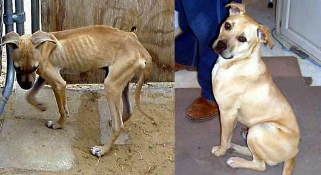

Buddy
Before Rescue

After Adoption
"When we first met Buddy at the shelter, he was scared and underweight. Today, he's the happiest dog who loves hiking and cuddles in equal measure!"
- The MASMOUDY Family